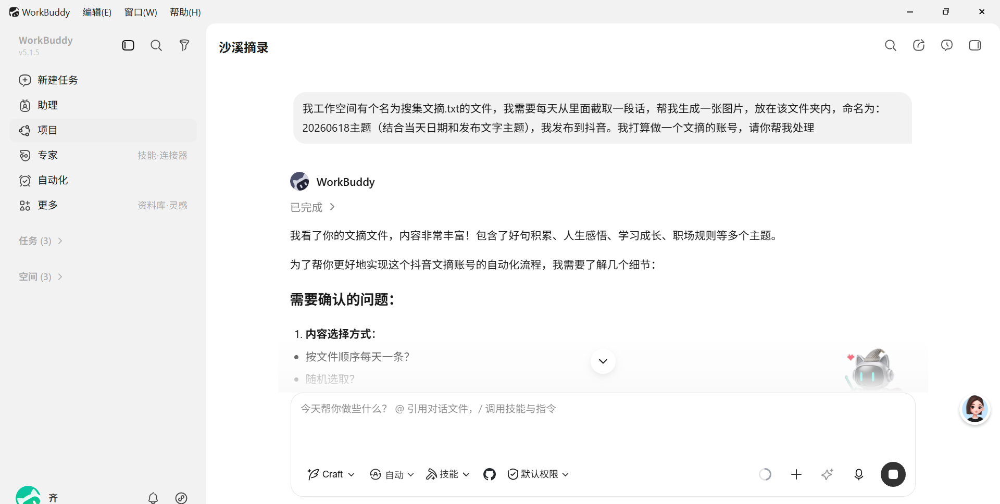
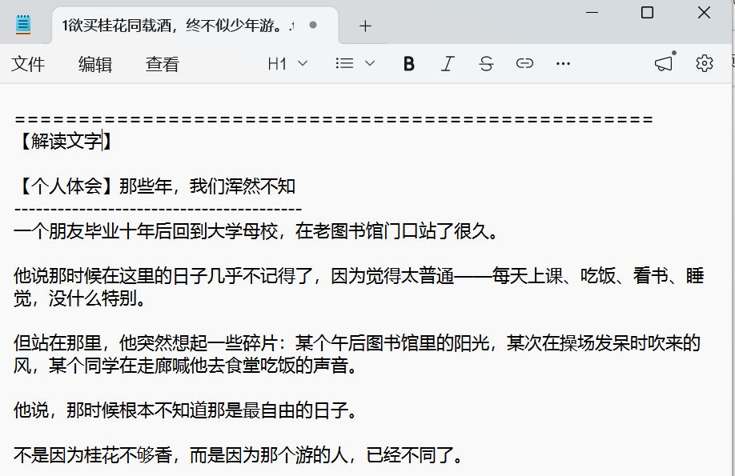
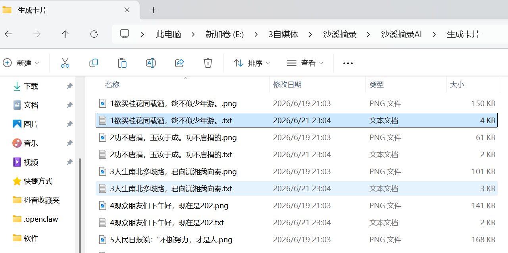

沙溪摘录 · 2026年6月 · 一个普通人的 AI 实践记录
一、一切从一个简单的想法开始
我做了一个抖音文摘账号，叫「沙溪摘录」。
想法很简单：把那些散落在各处的好句子、好段落，做成干净好看的图片卡片，每天发一条。既是给自己留个念想，也希望能给看到的人一点触动。
规划好内容方向后，我碰到了第一个现实问题——
我手里攒了一百多条摘录，如果每张卡片都手动设计排版，少说要花几十个小时。我既不会设计，也没学过 Python，更没有专业工具。
但我有 AI，还有一点不愿认输的心。
于是我决定：让 AI 来帮我做这件事。
二、选 AI 这件事，我走了不少弯路
决定用 AI 做这件事之后，我首先面临的问题是：用哪个？
这个问题比我想象的要麻烦得多。
我陆续试过好几款 AI 工具：有的只能聊天、没法帮我跑代码；有的能写代码，但每次对话结束就忘了上下文，下一次聊像从头开始；有的响应很慢，有的界面很难用。更重要的是——我需要一个能真正操作本地文件、执行脚本、帮我跑起来的助手，而不是一个只给我粘一段代码、让我自己去研究怎么跑的工具。
🔍试过只能聊天的 AI给出的代码需要自己配环境、自己调试，遇到报错没有人帮你看，每次都卡在环境和运行上。
🔍试过没有记忆的 AI每次新开对话，之前沟通好的需求、改过的参数、沉淀的规则全部归零，要重新交代一遍，效率极低。
✅最终选定：WorkBuddy能直接操作本地文件系统，帮我跑 Python 脚本，看到输出报错立刻定位修复；有项目记忆，每次打开都记得我们之前做了什么、改了哪些规则；对话自然，不需要每次重新交代背景。这才是我真正需要的那种"能干活"的 AI。
选 AI 工具这件事，我的建议是：不要只看它能不能"说"，要看它能不能"做"。
对我这个没有技术背景的普通用户来说，AI 能不能直接帮我跑起来、能不能记住项目进展、能不能跟着我一起调试——这才是最关键的。
三、第一步：描述需求，看看能走多远
我完全不懂 Python，也没有编程经验。但我知道自己想要什么——
👤 我：我想做一个抖音账号，每天发一张金句卡片。图片是竖版的，1080x1920。要有白色圆角卡片，卡片上方有标签名，正文居中显示，下方有一行点睛的结尾语。你能帮我生成吗？
🤖 AI：可以。我来用 Python + Pillow 库实现。先明确几个参数：背景色、字体、字号、行间距……
就这样，一来一回之间，一段我完全看不懂的 Python 脚本出现了。
我按照 AI 的指引，在本地跑起来——第一张卡片生成了。虽然排版还有很多问题，但那一刻真的有一种奇妙的感觉：我什么代码都没写，但我的想法变成了一张真实的图片。

四、最终成品长什么样
经过反复打磨，最终的卡片是这个样子的。每张卡片都是 1080×1920 竖版，纯 Python 代码生成，没有任何手工设计：



↑ 三张不同风格的成品卡片（均为程序自动生成）
↑ 从古典诗词到现实感悟，每条内容都有对应卡片和解读文档
💡 技术栈一览
Python + Pillow（图片生成） · 楷体/黑体/宋体中文字体渲染 · 自动字号缩放（62→56→50→44px） · 1080×1920 竖版（抖音标准）· 每张图附配套解读 TXT 文档

五、这条路上，我踩了哪些坑
我要诚实地说——这个过程并不顺利。每往前走一步，就会冒出新的问题。
但这些问题，反而是整段经历里最有价值的部分。
🪲问题一：文字上下不居中，看起来总是偏上卡片里的文字块贴着卡片顶边，下方留了大片空白。我描述了问题，AI 找到了根因：计算总文字高度时少计入了结尾语的高度。修复后，文字严格垂直居中。
🪲问题二：很多行只有一个句号或逗号图片里出现了大量只有"。"或"，"的孤立行，非常难看。根因是换行函数在标点处额外切行。最终解法：彻底删除按标点断行的逻辑，改为只按行宽断行，在预览文件里用 / 手动标记换行位置。
🪲问题三：生成的结尾语不是我改过的那个版本我在预览文件里修改了结尾语，重新生成后发现卡片用的还是旧版本。原因是脚本读的不是预览文件，而是原始数据文件。调整数据来源后，严格按预览文件生成。
🪲问题四：124 个解读文档，全是一个模板套出来的最初生成的配套文档，每一篇都是"深度理解 / 故事场景 / 情感共鸣"三段套路，完全不贴合具体卡片内容。我提出要「逐条定制化」——AI 为 124 条内容分别手写了不同角度、不同维度的解读，彻底告别同质化。
每一次遇到问题，我都没有选择放弃或绕过。 我会仔细描述"哪里不对、我想要什么效果"，然后和 AI 一起找根因、验方案。
这个过程本身，就是学习。
六、最终沉淀出的工作流
经过反复打磨，我们建立了一套可复用、可持续运转的工作流。这套流程在项目里有一个文件记录着：要求.txt，版本已经到了 v4.2。
1从「搜集文摘.txt」原始素材文件中，运行脚本自动生成「待确认_预览.txt」，包含每条内容的标签名、正文断句、结尾语草稿。
2我打开预览文件，亲手修改不满意的标签名、调整断句位置（用 / 标记）、改写结尾语，直到满意为止。
3告诉 AI「预览已确认」，运行 gen_from_preview.py，严格按照我修改后的预览文件生成卡片，不做任何额外改动。
4同步生成每张卡片的配套解读文档（多角度、定制化），可以直接用于抖音文字描述或评论区置顶。
5审核满意，直接发布。一次生成，日日可用。
这套流程有一个核心设计理念：人负责审美和内容，AI 负责渲染和批量输出。
我不需要懂代码，但我需要清楚地知道自己想要什么，并且能把它说清楚。
七、超出预期的部分：定制化解读文档
每张图片，都有一个同名的 TXT 文件。
一开始，这 124 个文档让我很失望——AI 对每一条都套了同一套三段式模板，换汤不换药。我直接说了：
👤 我：我看了你给我生成的解读类的 txt，那 128 个 txt 同质化严重，基本是个模子刻出来的……我希望的是你对应每个卡片的内容，生成定制化的解读类文档，可以不局限于这三点，你帮我多拓展，从多个维度解读图片的内容，帮我多写点角度，我来做选择。
AI 重写了整个生成脚本，为 124 条内容逐条手写解读。这一次，每条内容根据自身特点选择不同的解读角度：
📖 角度举例
· 「欲买桂花同载酒」→ 【延伸解读】人与时间的永恒错位 + 【情感共鸣】此刻你手里握着的才是最珍贵的 + 【反向思考】回不去，也未必是坏事
· 「职场潜规则马字诀」→ 【延伸解读】七个马字背后的权力逻辑（一段深度解析）
· 「张三举报作弊被孤立」→ 【延伸解读】学校教育 vs 社会教育的两套规则
这些文档，是每天发布时最好用的文案素材。
八、我真正学到的是什么
做完这个项目，我反复想一个问题：在整个过程中，AI 做了什么？我又做了什么？
AI 做了这些：写代码、调参数、修 bug、生成内容、批量处理。
我做了这些：提出想法、描述问题、定义标准、审核结果、坚持打磨。
我没有因为"看不懂代码"就止步——因为我不需要看懂代码，我只需要能清晰描述自己想要什么，以及什么地方还不够好。
这才是普通人用 AI 最核心的能力：把模糊的想法变成清晰的描述。
每一次问题的出现，都是一次更深理解的机会。孤立标点行是怎么来的？为什么生成的结尾不是我改的那个版本？为什么 124 个解读文档都一个模样？
我每次都把问题搞清楚，而不是绕过去。这个习惯，让整个项目最终沉淀出一套真正可用的工作流，而不是一堆临时凑合的代码。
九、如果你也想做类似的事
我不是技术人员。我用 AI 做这件事，不是因为我懂技术，而是因为我愿意持续去问、去试、去改。
如果你也有类似的想法，这里有几条我觉得真正有用的建议：
①先想清楚你想要什么。不是"帮我做个好看的图片"，而是"图片尺寸 1080x1920，白色圆角卡片，标签在卡片上方，正文居中，底部留白 1/5"。越具体，越好用。
②遇到问题，描述症状，不要猜原因。把你看到的现象说清楚（"很多行只有一个句号"），AI 来找根因。你不需要懂原理，但要能说清楚"哪里不对"。
③不要接受"差不多能用"。最初 AI 给的解读文档我完全不满意，但我说出来了，AI 就重写了。你的标准，就是 AI 的目标。
④让成果积累起来。工作流、规范文件、卡片样式——这些都是可以复用的资产。每次打磨，都让下一次更轻松。
普通人和 AI 之间， 没有技术门槛， 只有是否愿意持续探索的意志。
——「沙溪摘录」 · 沙溪
本文记录了从零开始用 AI 构建自动化图文生成工作流的完整历程。 如果对你有帮助，欢迎点赞或在评论区分享你的实践。
AI工具# 自媒体# Python# 效率工具# 普通人学AI# 内容创作# 抖音运营# 学以致用